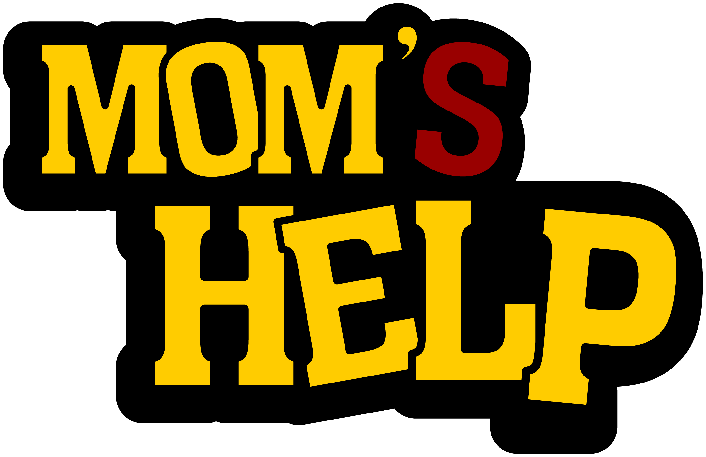
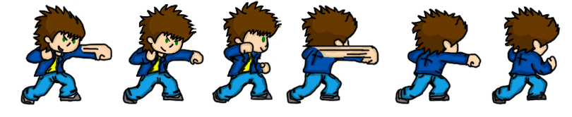

|  | ||
IntroduçãoO projeto teve como proposta desenvolver a identidade visual e marca de um jogo do gênero pocket game, assim como seus personagens e seu roteiro, cujo objetivo é demonstrar a proposta através de uma mini animação (demo do jogo). Design e linguagemPara começar a falar sobre o tema, é interessante verificar a definição de palavra design. Como é muito difícil criar uma definição própria, buscaram-se algumas já existentes, por exemplo, para Alexandre Wollner uma definição de design… É muito difícil, porque a evolução da linguagem, dos elementos técnicos é tão rápida que se fala de uma coisa hoje e ela é diferente amanhã. A PropostaÉ o desenvolvimento de um game, onde o objetivo é atingir não só os jovens, mas um público de várias idades. Trata-se de um jogo onde um garoto de aproximadamente 14 anos está em seu quarto lendo algumas HQs, quando entre uma história e outra ele sente fome e resolve procurar sua mãe para saber se tem algo pra comer. Quando ele passa na cozinha e percebe que ela não está fazendo a janta, e que a cozinha está uma bagunça. Ele olha para a pia e vê uma gosma verde, e então acha que é uma pista, e sai de casa a procura de sua mãe, e nessa busca se inicia o jogo. |
||
| Conheça nosso jogo! | ||